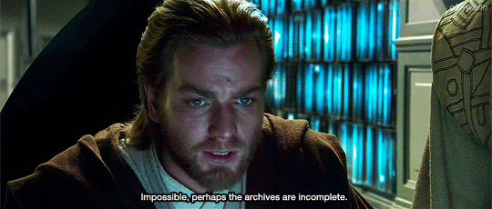
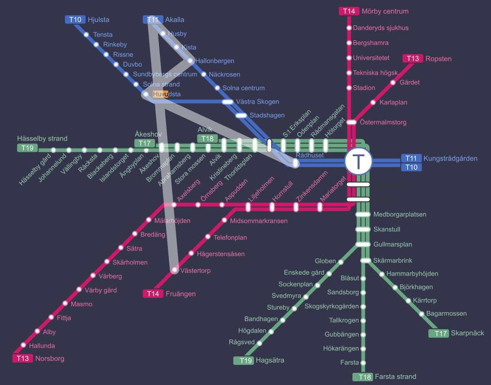

Solution: Ten Years Later
Answer: THE LION THE WITCH AND THE WARDROBE
Written by Lewis Chen, Andrew Hauge, Alan Huang, Colin Lu, Rahul Sridhar, Anderson Wang, Jakob Weisblat, Patrick Xia, and Ben Yang
This puzzle’s flavortext mentions the puzzle Overtime from the 2018 Galactic Puzzle Hunt. In that puzzle, solvers were presented with several puzzle fragments each of which corresponded to a puzzle from the 2017 Galactic Puzzle Hunt. To further clue this connection, the puzzle page was styled similarly to the 2017 hunt website.
This puzzle also consists of several puzzle fragments and its styling is also
different. This suggests that we need to find the Galactic Puzzle Hunt that it
corresponds to. Where can we find it? Although the archive
page only lists the 2017 and 2018 hunts, they both follow a consistent url
pattern of 20XX.galacticpuzzlehunt.com.

Since the title of this puzzle is “Ten Years Later,” we’re actually looking for
the 2009 hunt — which didn’t exist in reality, but if we navigate to
2009.galacticpuzzlehunt.com,
we’ll find that it’s been set up as a whole new hunt site with thirteen puzzles
and a meta.
The 2009 puzzles all come with solutions (although some are more helpful than others). We’ll have to match each 2019 puzzle fragment with the corresponding 2009 puzzle and solve the fragment to extract a single letter. Reading down in the order presented in this puzzle yields NARNIA BOOK TWO. This (along with a subtle reference in the 2009 meta solution saying “Unfortunately, I wasn’t able to fit three the’s in my answer”) clues the answer THE LION THE WITCH AND THE WARDROBE — though it’s okay if you tried PRINCE CASPIAN first. If we like, we can also try applying the mechanism from the 2009 meta, but it turns out it always transforms single letters to themselves, so the cluephrase ends up being the same.
| Misplaced Radicals | N |
| Voter Base | A |
| Stationary | R |
| Final Battle of Final Fate | N |
| Commemorate | I |
| Something’s Missing | A |
| The Super Bowl | B |
| Alphabet Soup | O |
| lolcatic trendsetters | O |
| Holmes’ Yellow Hibiscus Bath | K |
| Rage Comics | T |
| High Expectations | W |
| Primal Force | O |
Since the main mechanics of each puzzle are explained in the 2009 solutions, below we’ll note only what you need to know to solve the 2019 version.
Misplaced Radicals
by Andrew Hauge
The 2009 quotes were all from a recent Christopher Nolan film, The Dark Knight. This quote is instead from 2017’s Dunkirk, and the original version is “Come below - it’s out of the wind”. “wind” and “long” correpond to 168 and 182 in the Kangxi radicals table, so the answer is 182 - 168 = 14 = N.
Voter Base
by Alan Huang
As explained in the 2009 solution, there are three steps to this puzzle.
- The 2009 and 2019 puzzles both contain a blank image with the filename voter-base.png. In the 2009 version, the other images you had to find were named after the other puzzles in the round. In the 2019 version, you don’t have to do that — instead, you should try the obvious puzzle name, ten-years-later.png.
- The 2009 images all contained anagrams that were way too long to be solvable. This one, while a bit shorter, is probably still intractable... unless you know from the 2009 solution that all the phrases begin with THE WORD YOU ARE LOOKING FOR IS. Removing those letters from the letter bank leaves only a few that can easily be anagrammed into ODYSSEYS.
- Finally, we have to refer to the Python script linked in the 2009 puzzle. Though that page tells you not to look at the source, we’re going to shortcut the hard step of figuring out the logic by doing exactly that. Here we have a few options: we can read the code or the comments and then carry out the algorithm by hand, which should be pretty easy since there are only two or three meaningful steps, or we can modify the program to print out the letter it computes and just run it on our word. However, there is a pitfall on the lazy approach: the first two letters OD rot13 to BQ, the country code for the Caribbean Netherlands. This code was split from AN in 2010, so it is not present in the list in the program. We’ll have to bypass that check in order to let the program proceed.
{kind=link}
Whichever way we go, the final letter is A.
Stationary
by Jakob Weisblat
The images correspond to Akalla, Hallonbergen, Huvudsta, Rådhuset, and
Västertorp in the Stockholm Metro system. Connecting the dots in extraction
order draws the letter R.

Final Battle of Final Fate
by Ben Yang
The 2009 solution is somewhat lacking, so solvers had to figure out the details themselves. This puzzle references The Ultimate Showdown of Ultimate Destiny. Each of the pictured items is the final word of a line from the lyrics. The counterparts the solution refers to are the rhyming words from adjacent lines. These are
- Around
- Shaq-fu
- Batcave
- Shaquille O’Neal
- Shade
- Tripped
From here, we extract the “thematic” last letter, which gives the answer mentioned in the 2009 solution.
The 2019 subpuzzle is a picture of Bruce Wayne. In The Ultimate Showdown of Ultimate Destiny, Bruce Wayne rhymes with “writhing in pain”. Taking the final letter as indicated gives N.
Commemorate
by Colin Lu
This is from I am Legend. The answer is I.
Something’s Missing
by Rahul Sridhar
The bass line is missing all the A notes, so the answer is A. (We wanted this to autoplay on the 2009 site as well, but were hampered by the fact that the HTML5 <audio> tag wasn’t really a thing back then.)
The Super Bowl
by Anderson Wang
Just like the 2009 version, this puzzle is blank. If we follow the same process as described in the 2009 puzzle’s solution, but apply it to the famously low-scoring 2019 Super Bowl, we’ll extract the letter B. (In particular, the losing team made no touchdowns, so every instruction before that point becomes irrelevant.)
Alphabet Soup
by Ben Yang
The 2019 puzzle consists of a bowl of Cheerios (which can be considered a special case of alphabet soup). Since there’s only one letter, the answer is O.
lolcatic trendsetters
by Alan Huang
The 2009 puzzle claims it uses well-known songs. That isn’t really true. However, there are certainly some notorious artists involved. In fact, each song is from the same album as another song that has become an Internet meme in the years since 2009, even though the album was released before 2009. (Sort of — it’s hard to determine exact years for when some of them became memes.)
| Clued song | Artist | Album | Meme song |
|---|---|---|---|
| It Makes Me Ill | NSYNC | No Strings Attached | It’s Gonna Be Me |
| Trick or Treat | Andrew Gold | Halloween Howls | Spooky Scary Skeletons |
| Just For Now | Imogen Heap | Speak for Yourself | Hide and Seek |
| Turbo Love | Bag Raiders | Turbo Love | Shooting Stars |
| Morphine & Chocolate | 4 Non Blondes | Bigger, Better, Faster, More! | What’s Up? |
| Roll With It | Oasis | (What’s the Story) Morning Glory? | Wonderwall |
| I Won’t Hold You Back | Toto | Toto IV | Africa |
| I’ve Got a Heart | Tom Jones | Along Came Jones | It’s Not Unusual |
| Hot Cop | Village People | Cruisin’ | Y.M.C.A. |
| Trick Me | Kelis | Tasty | Milkshake |
Knowing that, or at least that we’re looking for a song lyric, we can find out that “free fall, the cat walk to the show” is from the song “Radio”, the seventh track on Smash Mouth’s 1999 hit record Astro Lounge (better known for its fifth song, “All Star”). Indexing 7 into Smash Mouth gives O.
Holmes’ Yellow Hibiscus Bath
by Rahul Sridhar
The image is a picture of the Orange Blossom, the state flower of Florida. The abbreviation of Florida is FL, which corresponds to Flerovium, the 114th element (named in 2012!). The 114th Supreme Court justice is Brett Kavanaugh. Circular indexing the year Florida joined the union, 1845, into KAVANAUGH yields the letter K.
Rage Comics
by Patrick Xia
In the “Solution”, the play order is right but the extraction is not actually specified; it was designed to be misleading to a “first letters” extraction. In the long Author’s Notes, the real extraction mechanism is described.
Here are the acts and scenes each Comic Sans line is referring to, with the panel that is out of monotonic order highlighted. The original text (according to shakespeare.mit.edu) is included. There were some very minor modifications between the source and comic text but the 2019 puzzle was exact.
| Play | Panel | Line | Act | Scene | Index | Letter |
|---|---|---|---|---|---|---|
| Antony and Cleopatra | 1.2 | I had rather heat my liver with drinking | 1 | 2 | 1 | A |
| 2.3 | I’the East my pleasure lies | 2 | 3 | |||
| 4.4 | is not this buckled well? | 4 | 4 | |||
| (1.5) | (FUUUUU) | *1* | 5 | |||
| Henry IV part 1 | 5.1 | Hear me, my liege | 5 | 1 | 1 | H |
| 4.2 | Will you give me money? | 4 | 2 | |||
| 1.3 | I’ll keep them all | *1* | 3 | |||
| (1.5) | (FUUUUU) | 1 | 5 | |||
| Henry IV part 2 | 4.1 | What is this forest call’d? | 4 | 1 | 1 | H |
| 3.2 | Bullcalf o(f/’) the green! | 3 | 2 | |||
| 2.1 | Basingstoke | 2 | *1* | |||
| (1.5) | (FUUUUU) | 1 | 5 | |||
| Henry V | 5.1 | Why wear you your leek? | 5 | 1 | 1 | H |
| 3.1 | The game’s afoot | 3 | *1* | |||
| 2.3 | Falstaff he is dead | 2 | 3 | |||
| (1.5) | (FUUUUU) | 1 | 5 | |||
| Henry VI part 3 | 5.7 | Once more we sit in England’s royal throne | 5 | 7 | 1 | H |
| 4.6 | Although my head still wears the crown, I here resign. | 4 | 6 | |||
| 3.1 | Where is thy crown? | 3 | *1* | |||
| (1.5) | (FUUUUU) | 1 | 5 | |||
| Henry VI part 2 | 5.2 | I say, come forth and fight with me! | 5 | 2 | 1 | H |
| 1.3 | You must fight or be hang’d | *1* | 3 | |||
| 2.4 | Go, lead the way. I long to see my prison | 2 | 4 | |||
| (1.5) | (FUUUUU) | 1 | 5 | |||
| Henry VIII | 1.1 | Where’s his exam(ination)? | *1* | 1 | 1 | H |
| 3.2 | look’d he o’ the inside of the paper? | 3 | 2 | |||
| 2.4 | It hat already publicly been read | 2 | 4 | |||
| (1.5) | (FUUUUU) | 1 | 5 | |||
|
For the 2019 version, we have the following, so the answer is T. |
||||||
| Othello | 1.2 | What is the news? | 1 | 2 | 2 | T |
| 3.3 | I have a pain | 3 | 3 | |||
| 4.2 | I cannot tell | 4 | *2* | |||
| (5.5) | (FFFFFUUUUU) | 5 | 5 | |||
High Expectations
by Andrew Hauge
The 2009 puzzle is about Lin-Manuel Miranda’s smash hit Broadway musical, In the Heights. This one is about his next, even more smash hit Broadway musical, Hamilton. There’s only one song and it’s Aaron Burr at 1:09 into “Wait For It”, so summing the digits as before yields 1, or W.
Primal Force
by Colin Lu
The given number is RSA-768, a cryptographic challenge which was finally cracked in December 2009. It can be factorized by putting it into a search engine (or having many supercomputers at your disposal and getting lucky). It factors as:
33478071698956898786044169848212690817704794983713768568912431388982883793878002287614711652531743087737814467999489 × 36746043666799590428244633799627952632279158164343087642676032283815739666511279233373417143396810270092798736308917
The two digits at position 30 of the difference, 3267971967842691642200463951415261814574363180629319073763600894832855872633276945758705490865067182354984268309428, are 15 which corresponds to O.
There are two slight complications here: the number is actually too long to search for directly in most search engines, but simply truncating it will still return the relevant results. The other slightly difficult aspect is that some online calculators (such as Wolfram Alpha) don’t know how to subtract such large numbers (or won’t return the answer with all of the digits). However, after a bit of searching for an appropriate calculator this problem should be surmountable.
Summed Up, a Quite Obviously Taxing, Difficult and Pure Meta with Just a Puzzle Title, Key To Breaking It
by Lewis Chen
As mentioned earlier in the solution, this meta mechanism (if you can call it that) takes single-letter answers that you get from all of the previous subpuzzles in the 2019 version and does nothing with them. Specifically, each number that you get from a single letter would fall between 0 and 25, so the mod 26 operation does nothing to this number. Finally, you decode numbers in the exact same way as you encoded the letters in the first part. Therefore, you get the cluephrase NARNIA BOOK TWO, as desired.
We thought that every puzzle set needed a meta, so this idea was offered up as something that would minimize the amount writing work (i.e. zero, so we wouldn’t have to rewrite any existing puzzles) that we would need. So in particular, the mechanism would have to keep single letters untouched, as well as take on pretty much any set of answers.
I thought it would be funny to create a purportedly pure meta, in which the actual shell would be entirely found in the title. Also featuring in the meta are some other taboos for puzzlehunt creation - unclued mod 26 and a particularly uninspiring cipher. While this puzzle does not outwardly exhibit any sort of anagramming, anagramming was indeed used in the creation process - I basically took the first pangrammatic phrase that I could make, ran the mechanism on all of the answers, and then saw which letters I could use for the 2009 answer. In other words, I wrote the meta after all the feeder puzzle answers had been assigned (another taboo, don’t actually do this in a real hunt). That led to the rather weird “answer” PICK THE THE MIX (other anagrams floated include THICK THEME PIX) which surprisingly ended up being sort of justified by the WALL-E theme, but not really. Oh, did I mention that the stated justification in the 2009 solution is pretty (intentionally) garbage (much like many of the other puzzles in the 2009 hunt ;) )?
Author’s Notes
The idea of this puzzle was an Overtime-style throwback that didn’t give an advantage to teams who had done previous GPHs. By creating intentionally broken past puzzles, we also aimed to be able to incorporate more interesting solve paths, rather than just following a solution step by step. Ideas for the year of the previous hunt ranged from 2004 to 2016, but we settled on 2009 due to a number of events we wanted to reference. We ended up with an overabundance of ideas and were able to replace several subpuzzles that got cut for various reasons.
The 2009 hunt is themed after WALL·E, a movie that came out the previous year. Hopefully by the time you got to the site, you understood that you only needed the puzzles and solutions, and didn’t go off chasing movie references! When we were discussing the format of the 2009 site, a Bitcoin theme was suggested, and it’s probably a good thing we didn’t go with that.
Commemorate is a reference to this legendary puzzle from the 2007 MUMS hunt, and its solution. The solutions for this puzzle are intentionally short to mimic the original. After the hunt, we were informed of this suspiciously similar 1999 Mystery Hunt puzzle, which is not only from exactly 10 years before 2009, but also has the same answer and a similar mechanism.
The 2009 version of Alphabet Soup came from a list of ideas for joke puzzles that would be hilariously terrible solver experiences. Rather than subject solvers to this (and the writing team to actually putting together the physical components), we hope that imagining the hypothetical puzzle provides plenty of amusement.
Several days after writing the 2009 meta, Lewis noticed that he had completely unintentionally included a hint for the correct extraction of the 2019 puzzle: his solution for the 2009 meta expresses regret that the “answer”, PICK THE THE MIX (which as noted above was just an anagram of thirteen essentially random letters), was only able to incorporate two THEs and not three. It turns out that THE LION THE WITCH AND THE WARDROBE contains three THEs and PRINCE CASPIAN does not. We hastily italicized that part of the 2009 solution even though we had no reason to expect solvers to pick up on it. The fact that THE unrelatedly also turns out to be the key to Commemorate is just icing on the cake.
The note at the bottom of the 2009 meta solution about cultural misunderstandings in microgravity is intended to subtly foreshadow the true plot of the 2019 hunt, which is basically about that.